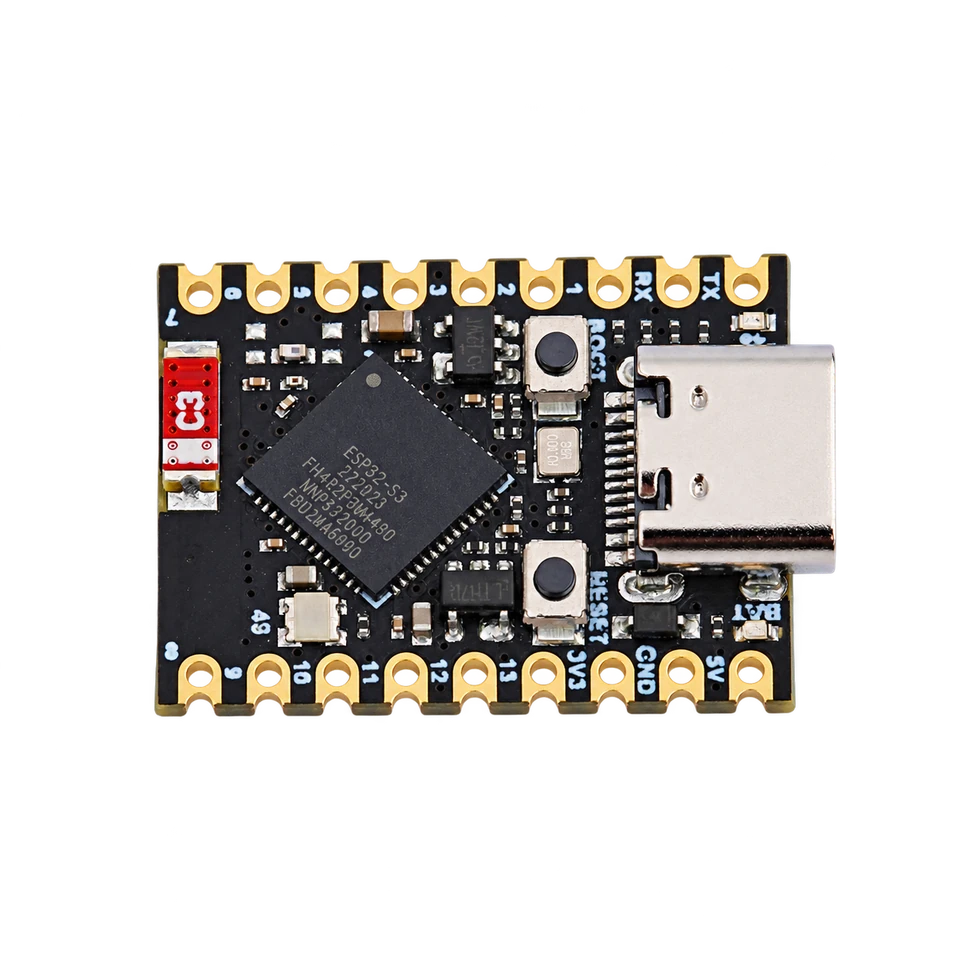

pinout and GPIO wiring
ESP32-S3 Super Mini / Zero
The full ESP32 Bit Pirate toolkit in a compact format, built around the ESP32-S3FH4R2 with 4 MB flash and 2 MB PSRAM. Explore protocol modes, USB adapters, radio tools and hardware experiments through native USB, with external modules to extend your setup.

wiring references
Super Mini / Zero pinouts and board photos
Four references for identifying the board, locating power and GPIO pads, and finding the USB connector and boot controls. Open an image for its full-size view.
compatibility
Super Mini / Zero board overview
A small USB-connected workbench for breadboards and fixtures. Check the chip marking and board revision before choosing firmware or wiring.
practical tasks
Super Mini / Zero supported workflows
Access the same range of ESP32 Bit Pirate workflows as other ESP32-S3 boards. These examples are starting points: explore the full protocol catalog, browser tools and recipes, then add the modules your task needs.
Work with serial buses, memory chips, sensors and target devices. Choose the mode and GPIO mapping that match your setup.
Turn the board into a dedicated USB adapter, capture signals, program devices or automate experiments from compatible tools.
Measure and generate signals, inspect GPIO activity and connect external modules for additional interfaces and peripherals.
Explore Wi-Fi, BLE and ESP SDR with the onboard radio, and extend the available radio workflows with supported external modules.
flash and connect
Start with the 4 MB firmware profile
Use a USB data cable and connect directly to the board’s native USB-C port.
Hold BOOT, press and release RESET, then release BOOT. Holding BOOT while plugging in USB also enters the download mode.
Open Web Flasher and select ESP32-S3 Super Mini / Zero — 4 MB Flash. Use the matching release image for your board.
After flashing, release BOOT and press RESET. Open Web Serial Terminal, select the board’s port and check the Bit Pirate prompt.
Close the terminal before flashing or connecting a dedicated adapter tool. If the port changes after a reboot, open the port picker again.
Pin mapping and wiring notes
Keep GPIO19 and GPIO20 reserved for native USB. BOOT uses GPIO0, and GPIO3 is a strapping pin: attached devices must not force a boot-incompatible level during reset.
GPIO logic is 3.3 V. The 5V power pin does not make the signal pins 5 V tolerant. Share ground with the target and use level shifting when needed.
Use short wires, keep the antenna area clear and check the actual GPIO labels before moving a fixture between Super Mini and Zero.
useful pages
Protocols, recipes and board references
Continue with a concrete wiring task or open the manufacturer documentation for your board variant.
Protocol modes
Useful recipes
board-specific answers
Super Mini / Zero FAQ
Firmware selection, native USB and practical wiring questions.
Which Bit Pirate firmware profile should I choose?
Choose ESP32-S3 Super Mini / Zero, marked 4 MB Flash, in Web Flasher. The source build environment is s3-supermini. This guide covers the ESP32-S3FH4R2 variants; check the memory fitted to your board.
Are Super Mini and Zero physically pin-compatible?
Do not assume the same pad positions. Use the matching gallery reference and the labels on your board. The pictured Super Mini and Waveshare Zero have different layouts and onboard LED pins.
Does the board need a separate USB-to-UART adapter?
No. Its USB-C connector carries native ESP32-S3 USB for flashing and the Bit Pirate terminal. Use a USB data cable and leave GPIO19 and GPIO20 reserved for USB.
How do I enter download mode?
Hold BOOT, press and release RESET, then release BOOT. Alternatively, hold BOOT while connecting USB. After flashing, release BOOT and press RESET to start the firmware.
Can I use 5 V signals on the GPIO pins?
No. The 5V power connection is separate from the 3.3 V GPIO logic. Use suitable level shifting for targets with other logic voltages and share ground.

source project
Super Mini / Zero in ESP32 Bit Pirate
A compact route to the same protocol modes, browser tools and practical debugging recipes. Choose a larger DevKit when the fixture needs easier access to more pins.